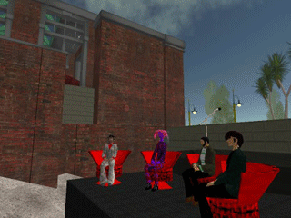

Body in Quotes

About the Panel
The Body in Quotes session brought together Nathaniel Stern, Jeremy Turner, and Stuart Bunt to discuss questions surrounding the body as experienced, and as subject matter. The avatar body used as a marker for presence in SL and other MMO's raises questions of identity, immersion, and performance. It also generates a particular kind of experience, that is at once removed from, but rooted in embodied experience. That said, the kind of visceral experience that one might experience in SL is very distinct from physical, organic 'wet biology' experiences. The panelists discussed the kind of discomfort these experiences can create, and how this relates to their own work.
Participants
Nathaniel Stern (Natberg Sternberg)
Jeremy Turner(Wirxli FlimFlam)
Stuart Bunt (Xerxes Druart)
Moderator
Carlos Castellanos (The Unknown)